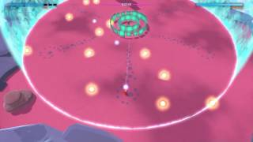
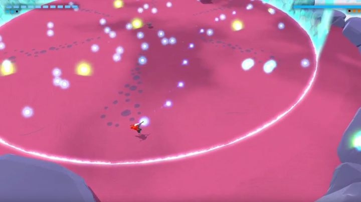
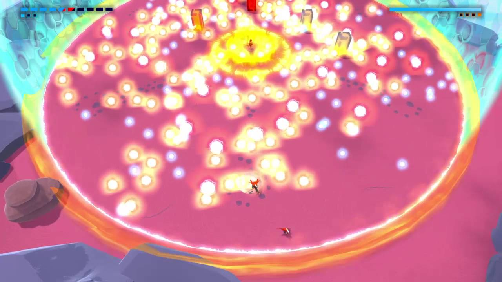

Now when it comes to this boss most people find it incredibly annoying but I personally love as it requires to move and shoot strategically. Now his story is that he is known as a master of time and when you showed up the clocks litterally stopped ticking, hence why he wants to take you down. He is also the only person that knows the truth behind your arival.In terms of design, I can see exactly why they chose what they did. He perfectly captures the look of the wise old man who’s seen it all.It was also a nice touch that they put a bunch of watches on his arms and legs. Although I don’t know why he’s wearing a pair of beats headphones. Now lets move onto the actual fight. The line’s gimmick is to make every action count as he will transform your shots into different projectiles to attack you with using his pillars and shields. The first phase is where he has three layers of rotating shields.
Now the main rule for the first few ranged phases of the fight is to use charged shots. He will reflect all shots using his shields, but they are destroyed by a single charged shot so this is the best way to fight him without getting overwhelmed. In the first phase a single shot to him will send you in to the second phase so make sure you line up your shots. His first wave of attack is where he surounds you with orange orbs and then makes them collapse on you. Your best course of action is to parry the shots when they close on you. He will then jump on a ginat pillar which will fire off unblockable wave attacks that you will need to dodge though. He will also have a wave of orange orbs that will go back and forth between him and the edge of the arena. Just make sure you pace yourself and to fire so many shots that you get killed instantly. Once you destroy his pillar he will spawn a bunch of bullets and start teleporting around trying to hit you with his sword. When you parry him he will freeze all bullets . That includes the bullets you shoot out of your pistol.
You have to fight him in melee range as soon as he freezes the bullets so do your best not to run itno any floating bullets. In melee phase he tends to teleport very often so keep your eye on him. He also attacksmuch faster than the previous two bosses so make sure you don’t block too late. His third phase is pretty much his second phase with slightly more powerful projectiles so just remember what you did last time. His final phase is where all hell breaks loose. The first part of his desperation attack is where he fires a bunch of energy orbs and shockwaves at you. My advice for this part of the phase? DODGE! Just keep on dodging an you’ll be fine. Now for the second part and I garuntee that this will cause a few broken controllers. The Line will summon eight pillars that you must destroy. Just like before the pillars will reflect bullets and multiply them into eight bullets, except this time the bullets will bounce off other pillars and multiply at extreme rates.
You must stay at the edge of the arena and strafe while constanly shooting. If you don’t you will get overwhelmed and die. Rotate around the arena as you destroy the pillars so there is a higher chance you actually hit the pillars. It will take a little while to learn how to move in this phase so just keep trying if you die. He dosen’t have a melee desperation phase so it will not take too long if you figure out how to strafe properly in this fight. Good luck on the fight.